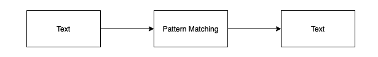
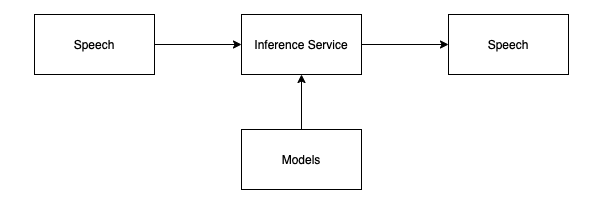
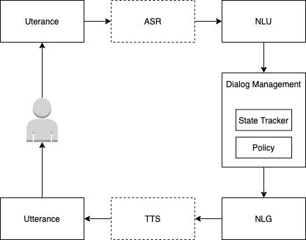
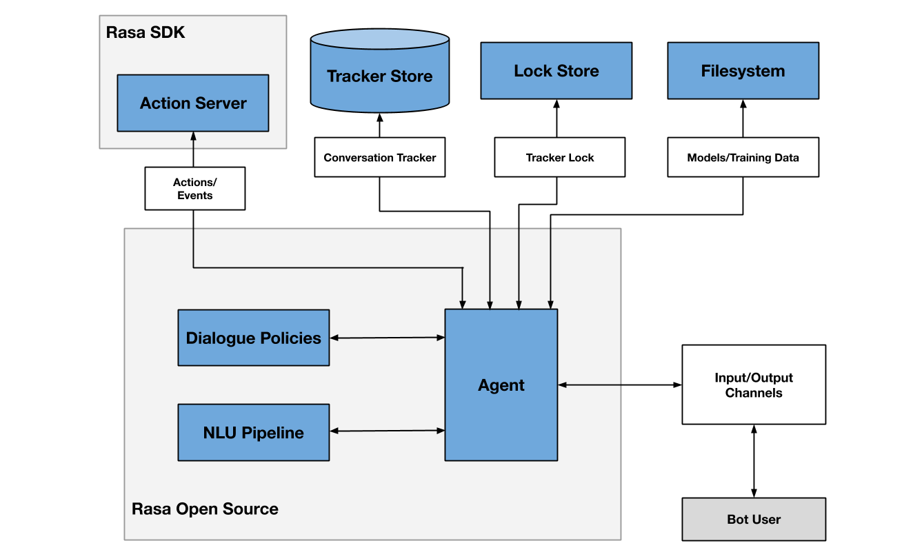
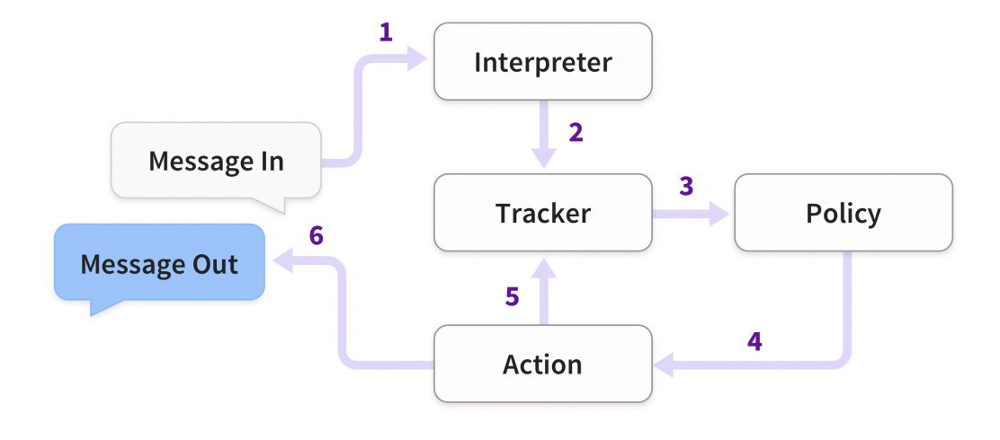
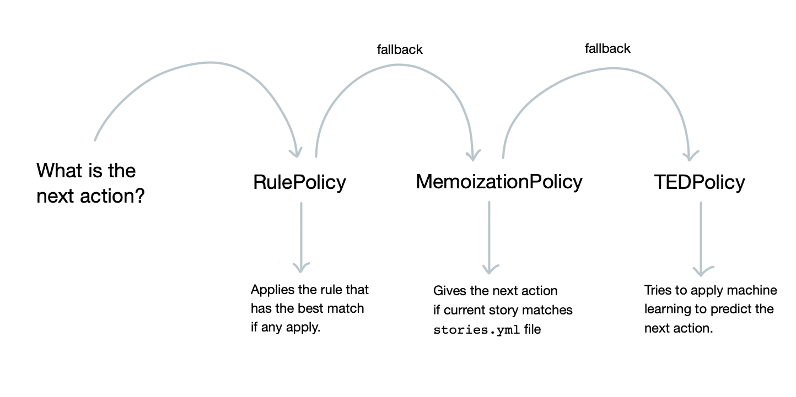

对话系统-101
今年 6 月底，由于工作需要，花了两周时间调研对话系统，并在公司内部做了一次调研报告。本文意在将此报告整理成文字版，算是对这段时间付出的一个交代。
如果你对这个领域没有过了解，正好你也对此感兴趣，希望本文能够帮助你从以下几个方面提升你对「对话系统」的理解：
- 问题背景
- 使用场景
- 基本概念
- 构建方式
- 基本架构
最后将以 Rasa 为例，介绍一个真实的对话系统项目。
背景知识
ℹ️ 本节内容主要来自于 Speech and Language Processing 这本书的第 24 章
对话系统，顾名思义是用来与真人对话的系统。要做好这样的系统，了解、学习和研究「人类对话的特点」很有必要。
人类对话的特点
人类对话的特点理论上属于自然语言学的研究范畴，内容丰富，这里仅摘取其中一些要点。但如果有一天你想要把对话系统做到极致，系统地学习更多自然语言研究成果肯定能自底向上地帮助到你。
- 轮次 (turns)：典型的对话通常由以对话双方轮流发言的形式出现，一来一回合称一轮 (turn)，来回多次被称为多轮对话。
- 对话行为 (dialogue acts)：人们的每次发言或多或少都会带着一些目的，即可以是粗粒度的，如表述 (constatives)、请求 (requests)、指令 (directives)、承诺 (commissives)、表态 (acknowledgements)、问题 (questions)，也可以是细粒度的，如询问天气、预约时间、预定机票等等。
- 共识确认 (grounding)：在对话过程中，为了保证双方的认识一致，沟通过程中会通过各种方式确认对方的想法。确认方式大致可以分为显式和隐式两种，举例如下：
- 显式：
- A：我肚子在叫……
- B：你是不是想吃午饭了？
- 隐式：
- A：我今天想快点去上海……
- B：好的，那你想从首都机场还是大兴机场出发？(隐含确认出行方式)
- 显式：
- 对话结构 (dialogue structure)：通过分析不同的对话，我们会发现对话常常由基本问答加上一些特殊变化构成。特殊变化包括题外话 (side sequence)、前置语句 (presequences)、后置语句 (postsequences)、重复确认 (clarification) 等等。
- 主导性 (initiative)：当对话中有一方一直在单向获取另一方信息时，我们称前者为主动方，后者为被动方。在对话系统中，对话双方是用户 (user) 和系统 (system)，那么从主导性出发，对话系统可以被分为三类：用户主导 (user-initiative)、系统主导 (system-initiative) 和混合主导 (mixed initiative)。
- 推理和隐喻 (inference & implicature)：所谓含沙射影、话中带刺、指桑骂槐、拐弯抹角都是推理和隐喻的艺术。当然，推理和隐喻也可用于表达非负面的含义，这里就不展开描述。
常见使用场景
对话系统最常见的三个使用场景是：问答、助手和聊天，三者从前往后难度、复杂度逐渐增加。
问答
问答场景常见于智能客服系统，问题和答案都比较固定，背后常常与知识库挂钩。我们甚至可以将问答系统理解成是用对话的方式快速检索使用文档中的 frequently asked question (FAQ)。在问答场景中，用户明确地知道与之对话的不是真人，因此也不会使用复杂的对话结构，主要以单轮对话的形式呈现，用户占主导。
助手
助手场景常见于智能设备上的语音助手，如 Siri、Alexa 和 Google Assistant 等，它的问题和答案相对固定，背后也可能与知识库挂钩。同时，助手需要和许多三方服务对接，以完成用户交付的任务，因此也常常被称为任务机器人 (task bot)。
但与问答场景不同，助手面对问题给出的答案或做出的行动可能随着用户输入的信息变化而变化。比如用户要订机票，助手需要知道出发地、目的地、时间、舱位等信息，这些信息不同，助手最终完成的任务不同。此外，在人们的真实对话中，将这些信息在一句话中说出并不符合人们说话的习惯，因此助手与用户之间往往要进行多轮对话。
在助手场景中，尽管用户明确知道对方是机器人，但对话过程相比于问答更加自然一些。
聊天
聊天场景指的是像人一样与人交谈，市面上存在的系统有贤二机器僧、微软小冰等。理论上，聊天不存在固定内容，天南海北都可以侃。著名的图灵测试就是用于验证机器是否可以让人无法分辨他是在和人聊天还是在和机器聊天。
在聊天场景中，对话系统面对的挑战与前二者相比要复杂很多，如自然语言理解能力、记忆能力、知识面，甚至语气、性格等等，但它提供的对话体验也最接近与真人交谈。
构建方式
基于规则

简而言之，基于规则的构建方式就是预先根据领域知识设定一些规则，用户输入文本后，系统根据规则的优先级逐条比对，符合规则条件后，根据预设的模板拼接出响应。我们来看临床心理机器人 ELIZA (1966) 的一段对话：
1 | # U → 用户，E → ELIZA |
这里实际上背后匹配了两条规则：
(0 You 0 Me) → (What makes you think I 3 You)(I *) → (You say you 2)
当发言和 left hand side (LHS) 匹配时，就用 right hand side (RHS) 回复，并且用发言中对应位置的内容替换掉回复模板中的变量，上述规则中 RHS 的数字就表示 LHS 中对应的位置 (从 1 开始计数)。当然，实际上 ELIZA 背后的采用的规则和匹配方式更加复杂，如果感兴趣可以阅读论文原文 (cited by 5220)。
基于规则的方式优点包括：
- 开发速度快、成本低、易集成
- 行为稳定、可解释，安全可控风险小
- 能发送多媒体信息、图片、视频
- 推理时间短、速度快
- ...
其缺点包括：
- 维护成本高，需要人工维护规则和优先级，复杂度高了以后难以管理
- 不具备自然语言理解能力，同义语句无法触类旁通，需要穷举规则
- 新增语言支持成本高
- ...
基于语料

基于语料，顾名思义在构建系统之前需要准备大量真实环境的对话数据，根据这些数据训练出对话模型再投入使用。在对话时，服务会把用户的发言输入到预训练好的模型中，模型给出推理的结果返回给用户。这里的模型可以分为两类：
信息检索：这类模型会将所有对话转化成常用的自然语言特征，如基于词频的 tf-idf 或基于语义的 embedding，然后将这些特征存入通用搜索引擎或向量检索引擎中。收到用户发言后，先将文本做相同的向量化处理，然后再通过上述引擎检索举例最近的对话，将回答返回给用户。基于信息检索的模型只能生成训练数据中已知的回答，相比基于规则的模型，它不需要逐条地维护规则，而是将规则通过穷举的方式沉淀在数据集中。
统计模型：这类模型会将所有对话输入到统计机器学习模型中，如 Transformer，通过有监督训练得到语言模型，这类语言模型可以通过预测的方式生成回答，尽管这些回答源自于训练数据，但这些回答可能从众多对话中博采众长，而不是择其一而用，因此它的回答中可能出现训练数据中不存在的语句。
不论是信息检索还是模型生成，只要是基于语料构建的对话系统都存在一个问题，就是「garbage in garbage out」，如果语料有问题，对话系统就有问题。
基于语料的方式优点包括：
- 系统维护成本低，训练完后无需其它维护成本
- 具备自然语言理解能力，能识别同义语句的不同表达
- 新增语言支持成本低，因为开源社区中已存在不同自然语言预训练好的特征提取工具
- ...
其缺点包括：
- 开发周期长、成本高、需要大量训练数据
- 训练数据问题可能导致系统行为不稳定，风险不可控
- 线上模型推理时间长，占用资源多
- 不支持多媒体消息，只能发送文本或文本合成的语音
混合方案
混合方案，其实就是将基于规则和基于语料的方案融合。融合的方式千变万化，一个典型的例子是：使用统计模型做句子中的内容提取，对话行为识别，使用规则生成回答。这种做法既可以保持对内容的语义级别理解，又能够控制回答的风险，避免生成行为的不稳定。其优缺点需要具体分析，理想状况下是能达到前两种方案的取长补短。
小结
构建方式与使用场景二者并没有直接关系，是不同抽象层级上的概念，任意使用场景都可以使用任意构建方式来实现。你既可以穷尽世上所有对话，将它们转化成规则，用基于规则的方式构建聊天机器人，也可以使用基于语料的方式将知识库输入到统计模型中得到客服机器人。但无论使用哪种方案，面对难度越大的场景，投入的资源越多，遇到的挑战越多，方案的复杂性越大。复杂场景的解决方案同样能用于简单场景，比如一个面向助手场景的对话系统，通常也能适用于问答场景，只不过是「割鸡用牛刀」而已。
对话系统
⚠️ 在下文中，我们会将讨论范围缩小到使用混合方案构建的、用于助手场景的对话系统，我们同样将之称为对话系统。这里虽然有一点名词滥用，但是为了行文更流畅，暂且这样处理。
基本概念
领域 (Domain)
通常对话系统只解决某个具体领域问题，如网约车客服、新生入学助手、语音助手等等。不同领域可能拥有各自的概念、对话特点、甚至机器人的性格、语气等等，但它们共享底层的能力，比如自然语言理解、对话状态管理、对话策略管理、自然语言生成等等。
对话代理人 (Agent)
对话代理人既可以是真人，如客服人员、客户支持代表，也可以是虚拟人，如机器人。在对话系统内部，你可以简单地将对话代理人理解成机器人。机器人因其设计目的不同，既可用于解决单领域 (single-domain) 问题，也可用于解决多领域 (multi-domain) 问题。
会话 (Session)
会话是对话代理人与用户之间发生的一次连续对话，不同对话系统可以有自己对「连续」的定义。通常用户在开启会话时会带着明确的目的，会话结束时，目的即可能达成，也可能未达成，而未达成目的的对话就是对话设计者需要重点关注的内容。
剧本 (Story)
剧本是在对话设计中设定的模板，比如：
- 询问天气
- 预定车票
- 取消订单
- 修改地址
- …
通常一个会话对应一个剧本，比较灵活的对话系统可以支持在一个会话中通过上下文切换 (context switch) 演绎多个剧本。
每个剧本在演绎的过程中需要记录一些供机器人决策使用的上下文信息，这些信息包括但不限于：
- 双方的对话历史
- 系统和外部注入的事件
- 表单 (form) 信息
- …
发言 (Utterance)
在对话中，机器人与用户任何一方说出的任意一句话。
对话策略 (Dialogue policy)
在收到用户的发言之后，机器人要决定回复什么内容，这个决定的根据就是系统中设定的对话策略。剧本是对话策略的一种，一个复杂的对话系统还可能包含其它类型的对话策略。
意图 (Intent)
意图是系统能够识别的最小的用户目的，是系统决策的基本元素之一。只有在识别用户发言背后的含义后，机器人才能决定回复什么。剧本中的每一章节由用户意图的识别和机器人采用的回答构成。从发言的角度出发，意图约等价于发言中的动词。如「下周我要飞去上海」中的「飞」就是意图。
实体 (Entity)
实体可以认为是发言中的名词，如「我想订 7 月 20 日从北京飞到云南的机票」中的「7 月 20 日」、「北京」、「云南」和「机票」对应着时间、出发地、目的地和票据，四者都是实体。有些实体和领域息息相关，如票据这样的实体几乎不会出现在点餐机器人系统中；有些实体则比较通用，比如时间、地点、数字等等。和领域相关的实体需要单独定义，通用实体则可以由平台统一支持。
槽位 (Slot)
在剧本的上下文信息中，我们提到过表单，后者记录着与决策有关的数据，如购买机票所需的「出发地」、「目的地」、「时间」等信息。我们称盛放这些信息的容器为槽位，信息本身为槽位填充物 (slot filler)。想象去打疫苗时填写的表格，表中的每个空就是槽位，你填写的内容就是槽位填充物。
🙋🏻 槽位和实体的区别是什么？
实体指的是从单句发言中提取到的信息，而槽位存储整个会话过程中提取到的所有信息，前者是后者的数据来源，槽位存储的信息会被用于后续对话系统决策的过程中。
动作 (Action)
理解用户的意图后，对话代理人除了回复消息外，可能需要帮助用户去做一些动作，比如：
- 修改日程
- 注销账号
- 修改套餐
- 查询天气
- …
不同领域的对话代理人需要执行的动作不同，需要定制化开发。在设计中，机器人回复消息通常也会被认为是一种动作。举一个简单的例子：
1 | story: |
上面这个剧本说的就是：机器人在识别用户发言中的意图是举办会议 (arrange_meeting) 时，先执行更新日历 (update_calendar) 的动作，再执行回复用户 (utter_arrange_meeting) 的动作。
对接渠道 (Channel)
对话代理人本身只负责对话逻辑，并不包含对话载体，如钉钉、美洽、飞书、Slack 等等，后面列举的这些载体就是对接渠道。
一般架构
对话系统的一般架构图如下所示：

Automatic Speech Recognition (ASR)
ASR 模块负责将用户输入的音频转化为文本，得到用户发言的文本。这个模块既可以采用通用型 ASR 服务，也可以在领域内通过迁移学习定制化开发。ASR 的识别准确度将对后续所有模块的处理产生深远的影响，就好比在传话游戏中，越靠前的表述错误会被放得越大。
⚠️ 如果对话系统仅需支持文本对话则无需 ASR 模块，因此在架构图中用虚线表示
Natural Language Understanding (NLU)
NLU 模块负责从用户的发言中解析出对话中包含的关键信息，如领域、意图、实体等等。在早期的对话系统中，主要依靠基于规则匹配的方式提取信息，而现代对话系统则主要采用统计机器学习模型，基于大量语料训练得到。用于领域、意图识别和实体提取的模型通常会共享文本特征，在预测模块中区分。当然，也存在混合解决方案的 NLU，如同时支持基于规则和基于语料的实体提取。
NLU 模块有时也会被用于从粗筛后的备选答案中做精筛，比如根据发言与语料中备选回复的特征距离来做出最终选择。
Dialogue Management (DM)
DM 模块负责管理当前对话的状态 (State) 和策略 (Policy)，其中对话状态包括用户与对话代理人之间的历史聊天记录以及关键信息，策略是根据状态输出回复的函数。
Natural Language Generation (NLG)
当对话代理人做完决定后，需要把它想回复的内容转化成自然语言，这一步骤就由 NLG 模块负责完成。NLG 有两种方案：基于模板和基于统计。
基于模板
基于模板的生成方案中，对话代理人的所有发言都由对话设计师设计而成，然后将剧本中的上下文信息，如槽位填充物，填入模板。举例如下：
1 | const template = "What time do you want to leave %s" |
通常为了让回复不那么呆板，会为同一个回答预置多个模板，然后在回复时通过一些策略选取一个。
基于统计
基于统计生成的目标就是在大量标注语料训练后，能够自动生成含义相同、表述不同的发言，如：
1 | 1. Au Midi is in Midtown and serves French food. |
基于统计的生成方案需要大量的训练数据，这些数据本身很难获取，难度体现在两方面：
- 在某领域的对话代理人上线之前，很难获得和生产环境相近的数据
- 以上面的句子为例，如果要训练一个点餐机器人，那么要找到包含所有饭店、地点和菜色组合的语料几乎不可能
因此有一种比较常用的技术叫 delexicalization，即将句子中的实体替换成实体类型，如：
1 | 1. $restaurant_name is in $neighborhood and serves $cuisine food. |
在训练时使用实体类型，预测时将实体真实取值填入即可，后者被称为 relexicalize。
Text To Speech (TTS)
TTS 模块负责将对话代理人的回复发言转化成语音。
⚠️ 如果对话系统仅需支持文本对话则无需 TTS 模块，因此在架构图中用虚线表示
案例分析：Rasa
Rasa 不仅是一个开源对话系统的名字，也是其背后的创业公司名称。截止到调研结束，该公司已经拥有 221 人的创业团队，其中算法团队 12 人，工程师 33 人，使用它就相当于拥有 221 人在背后帮忙做产品、工程、算法的优化。此外，Rasa 的技术博客也相当活跃，最近更新的文章也发布于 2021 年 7 月。
Rasa 旗下有两个核心产品：Rasa OpenSource 和 Rasa X。Rasa OpenSource，顾名思义是开源软件，它提供的开发框架可支持开发者灵活定制对话系统，授权协议为 Apache 2.0；而 Rasa X 为闭源项目，是基于 Rasa OpenSource 之上提供的一些优化构建工作流的有页面交互的外围服务，如开发调试、分享试用、模型管理、对话数据管理等等。虽然代码不开源，但 Rasa X 的编译产物已开放使用，授权协议为 Rasa X Community Edition License，大意就是不可基于此提供 SaaS 服务。一言以蔽之，没有 Rasa X，开发者也能利用 Rasa OpenSource 构建对话系统，有了 Rasa X，开发者可以更高效地构建对话系统。本文只讨论与对话系统核心逻辑相关的 Rasa OpenSource。
系统架构 (Rasa OpenSource)
ℹ️ 本节内容源自这篇文档

各个模块的说明罗列如下：
- NLU Pipeline：用于意图识别、实体提取、响应检索，具体原理可以阅读这篇博客，以及观看这组视频
- Dialogue Policies：用于管理对话策略，具体原理可以阅读这篇博客
- Tracker Stores：负责对话数据的读写，支持使用不同的存储引擎
- Lock Stores：通过抢锁来确定单个对话中发言的顺序，从而支持对话系统的横向可扩展性
- Model Storage：支持从本地磁盘、HTTP 服务以及对象存储获取训练好的模型
- Action Server：既可以用于帮助机器人对接三方服务，执行用户期望的任务，也可以用于更灵活地控制对话逻辑
- Event Brokers：可以将对话过程中发生的事情异步通知给第三方服务，与外部服务分享对话数据
对话过程
ℹ️ 本节内容源自这篇论文

- 用户发送消息给服务，先进入 interpreter，后者利用 NLU 从文本中提取意图等结构化信息
- Tracker 拿到消息本身以及 NLU 分析后的结果，将必要的信息持久化到存储引擎中
- Policy 从 Tracker 中拿到当前状态
- Policy 根据当前状态和历史对话数据以及预先设置好的对话策略，决定下一步动作
- 选中动作后，记录一条动作日志到 Tracker 中
- 执行动作，这个动作可能是发送响应数据给用户，可能是请求 Action Server 调用第三方服务接口，也可能是阻塞等待用户输入
- 如果待执行的动作不是 "listen"，即阻塞等待用户输入，则回到步骤 3
决策过程
ℹ️ 本节内容源自这篇博客，想详细了解可阅读全文
Rasa OpenSource 提供三种回复策略：
- RulePolicy：基于规则的策略，但这个规则具备 NLU 理解能力，这种策略通常没有记忆能力，只负责单轮对话
- MemoizationPolicy：基于剧本的策略，根据预先写好的剧本，逐步推进对话。剧本之间无法切换，常用于助手场景
- TEDPolicy：根据提供的剧本数据来预测下一个行为，具备剧本泛化能力，使得对话系统更加智能
三种策略的优先级依次递减，决策过程如下图所示：

其它对话系统
除 Rasa 之外，市面上也存在一些抽象层级更高，面向非研发人员的对话系统构建平台，如 Google 的 DialogueFlow、AWS 的 Lex、Microsoft 的 Bot Framework、百度的 UNIT 以及阿里的云小蜜等等，这些平台都是闭源系统，能获取的文档主要以如何使用为主，因此不属于本文的探索重点。但从产品角度出发，它们依然有很高的调研价值。
后记
完成本篇文章，算是对这段时间调研的一个交代。后续我们将继续探索对话系统的实践，以期在对话设计、构建，以及智能化项目中工程团队与算法团队合作等方面获得更多的经验和洞见。
参考文献
- Speech and Language Processing - Chapter 24: Chatbots & Dialogue Systems
- Rasa：
- docs
- github organization
- blogs
- Youtube
- Wikipedia: Turing test, ELIZA, tf-idf, word embedding
- Papers